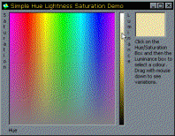

Hue, Luminance and Saturation Demonstration (10K)
Hue, Luminance and Saturation Demonstration (10K)
 25 Aug 1999
25 Aug 1999
First Posted

Hue Luminance and Saturation (HLS) Model and Manipulating Colours
Pick and manipulate colours more easily
Normally in computers colours are described in terms of their Red, Green and Blue components. Whilst you can specify all displayable colours this way, it leaves something to be desired when it comes to picking a colour. For example, most people find it very difficult to determine what RGB values you would use to create a Pink or Brown colour (try it!). The HLS model provides a more intuitive method and enables you to create lighter/darker or more intense/less intense versions of colours very easily.
The Hue, Luminance and Saturation Model
There are numerous colour models which attempt to work around the limitations of RGB and provide a more intuitive way of getting to the colour you want. One of the easiest, and most frequently used, is the Hue, Luminance and Saturation (HLS) Model.
This HLS model describes colours in the following terms:
- Hue
The horizontal axis of the box in the demonstration project picture, which varies from magenta - red - yellow - green - cyan - blue - magenta. - Saturation
The vertical axis of the box, and describes how intense (saturated) or "grey" (unsaturated) the colour is. - Luminance
The second picture box in the demonstration project picture, which and varies from black (0 luminace) through to the brightest version of the colour itself.
With this model it is easier to pick a colour and it allows you to do things in code which you can't really achieve with RGB. Examples are determining what a lighter or darker tone of a given RGB colour is (by modifying the Luminance), creating a more washed out colour (by modifying the Saturation) or colourising a whole image (by modifying the Hue).
Coding the HLS Model
Normally Hue is expressed as an angle between 0-360 to describe the colour and a value between 0 and 1 (a percentage) to describe Hue and Saturation. I have missed out the conversion to an angle in this implementation so the Hue works as follows:
Hue Colour -1 Magenta 0 Red 1 Yellow 2 Green 3 Aqua 4 Blue 5 Magenta
Here is the code to do a conversion between HLS and RGB and vice-versa:
Public Sub RGBToHLS( _
ByVal r As Long, ByVal g As Long, ByVal b As Long, _
h As Single, s As Single, l As Single _
)
Dim Max As Single
Dim Min As Single
Dim delta As Single
Dim rR As Single, rG As Single, rB As Single
rR = r / 255: rG = g / 255: rB = b / 255
'{Given: rgb each in [0,1].
' Desired: h in [0,360] and s in [0,1], except if s=0, then h=UNDEFINED.}
Max = Maximum(rR, rG, rB)
Min = Minimum(rR, rG, rB)
l = (Max + Min) / 2'{This is the lightness}
'{Next calculate saturation}
If Max = Min Then
'begin {Acrhomatic case}
s = 0
h = 0
'end {Acrhomatic case}
Else
'begin {Chromatic case}
'{First calculate the saturation.}
If l <= 0.5 Then
s = (Max - Min) / (Max + Min)
Else
s = (Max - Min) / (2 - Max - Min)
End If
'{Next calculate the hue.}
delta = Max - Min
If rR = Max Then
'{Resulting color is between yellow and magenta}
h = (rG - rB) / delta
ElseIf rG = Max Then
'{Resulting color is between cyan and yellow}
h = 2 + (rB - rR) / delta
ElseIf rB = Max Then
'{Resulting color is between magenta and cyan}
h = 4 + (rR - rG) / delta
End If
'end {Chromatic Case}
End If
End Sub
Public Sub HLSToRGB( _
ByVal h As Single, ByVal s As Single, ByVal l As Single, _
r As Long, g As Long, b As Long _
)
Dim rR As Single, rG As Single, rB As Single
Dim Min As Single, Max As Single
If s = 0 Then
' Achromatic case:
rR = l: rG = l: rB = l
Else
' Chromatic case:
' delta = Max-Min
If l <= 0.5 Then
's = (Max - Min) / (Max + Min)
' Get Min value:
Min = l * (1 - s)
Else
's = (Max - Min) / (2 - Max - Min)
' Get Min value:
Min = l - s * (1 - l)
End If
' Get the Max value:
Max = 2 * l - Min
' Now depending on sector we can evaluate the h,l,s:
If (h < 1) Then
rR = Max
If (h < 0) Then
rG = Min
rB = rG - h * (Max - Min)
Else
rB = Min
rG = h * (Max - Min) + rB
End If
ElseIf (h < 3) Then
rG = Max
If (h < 2) Then
rB = Min
rR = rB - (h - 2) * (Max - Min)
Else
rR = Min
rB = (h - 2) * (Max - Min) + rR
End If
Else
rB = Max
If (h < 4) Then
rR = Min
rG = rR - (h - 4) * (Max - Min)
Else
rG = Min
rR = (h - 4) * (Max - Min) + rG
End If
End If
End If
r = rR * 255: g = rG * 255: b = rB * 255
End Sub
Private Function Maximum(rR As Single, rG As Single, rB As Single) As Single
If (rR > rG) Then
If (rR > rB) Then
Maximum = rR
Else
Maximum = rB
End If
Else
If (rB > rG) Then
Maximum = rB
Else
Maximum = rG
End If
End If
End Function
Private Function Minimum(rR As Single, rG As Single, rB As Single) As Single
If (rR < rG) Then
If (rR < rB) Then
Minimum = rR
Else
Minimum = rB
End If
Else
If (rB < rG) Then
Minimum = rB
Else
Minimum = rG
End If
End If
End Function
Limitations of the HLS Model
Whilst the HLS Model is simple to implement, and gives a relatively easy colour picking interface, it is not a physically accurate model. That is to say, linear changes in luminance, hue or saturation do not correspond to a linear change in colour to the eye. More accurate models which overcome these limitations exist, such as the CIE scheme, but I've yet to understand these enough to work them out! Anyway, HLS works well enough unless you are interested in exact colour matching and processing between different display devices.